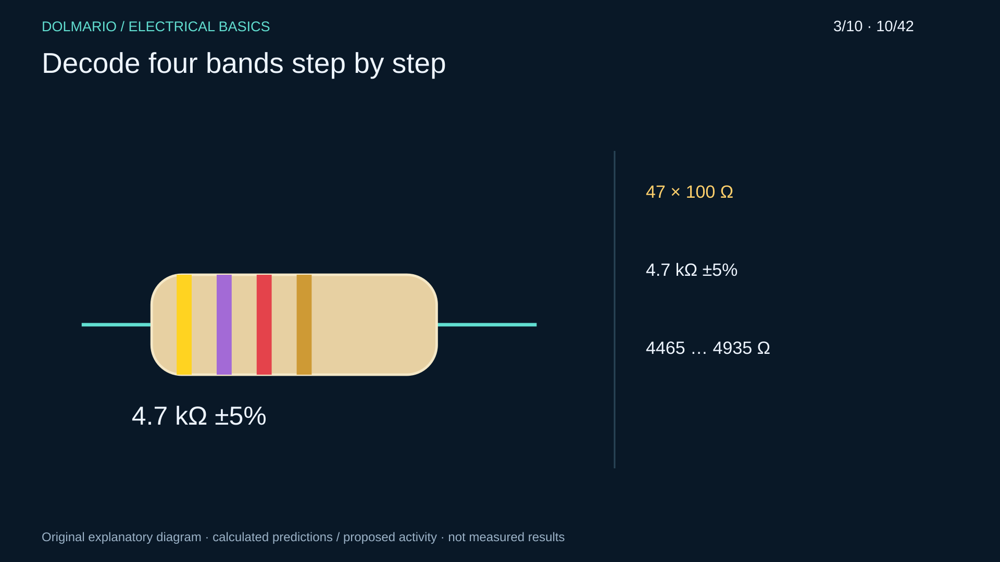
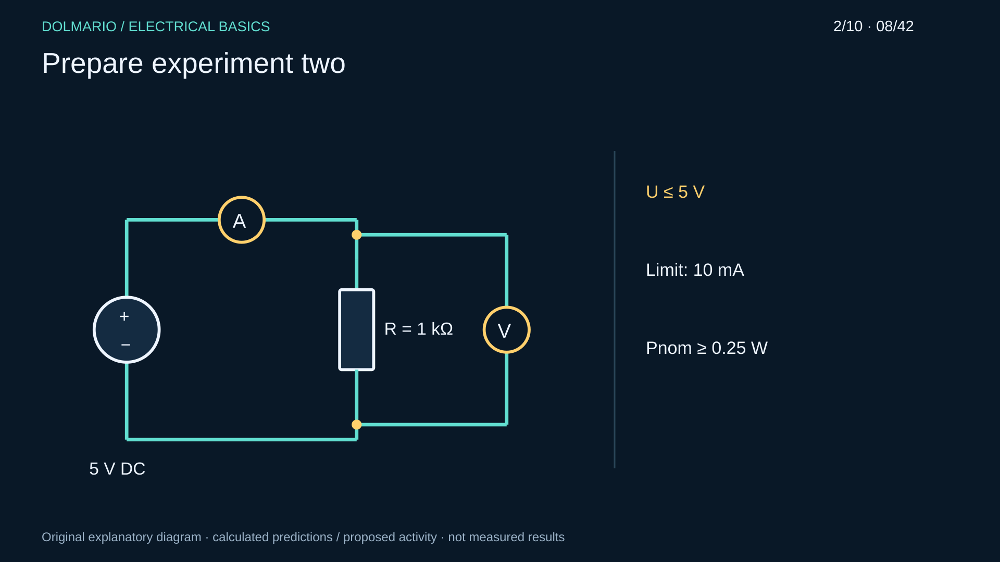
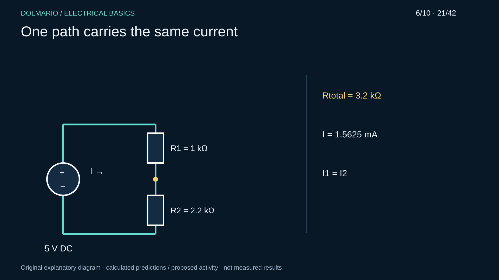
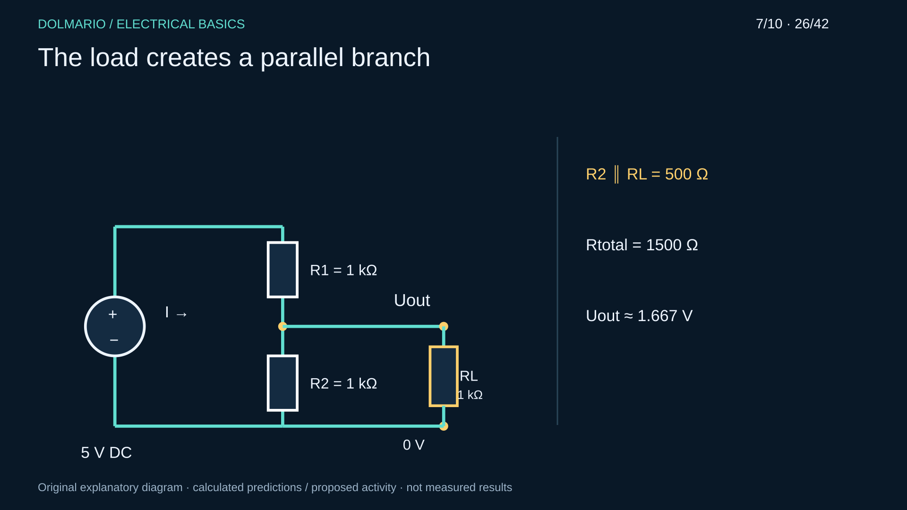
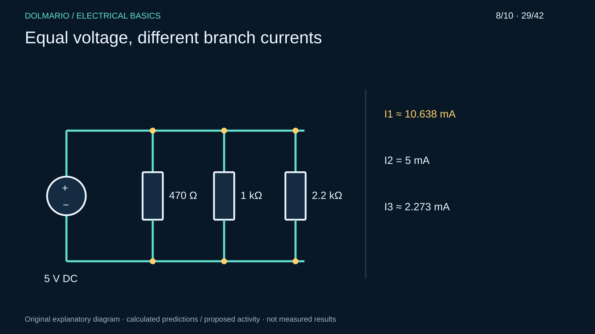
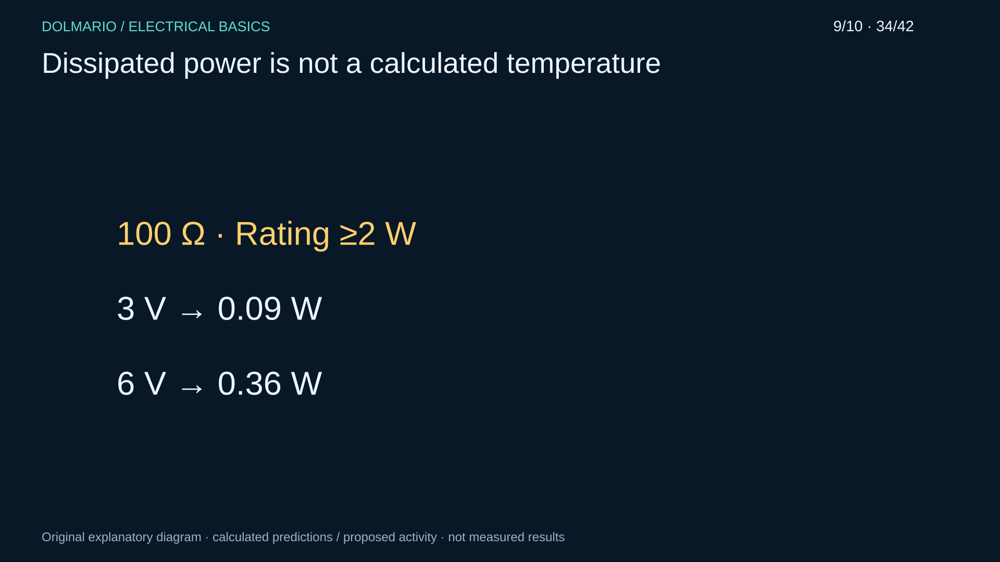
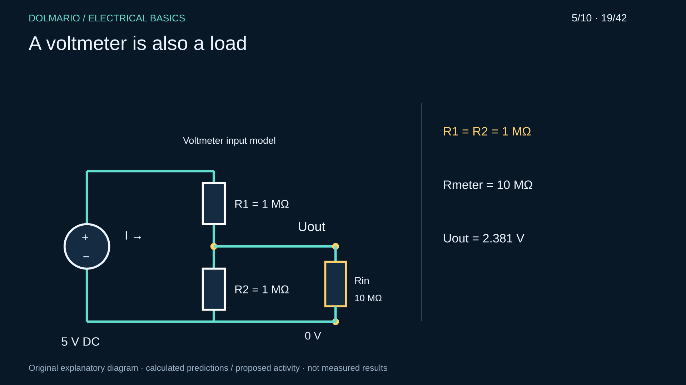
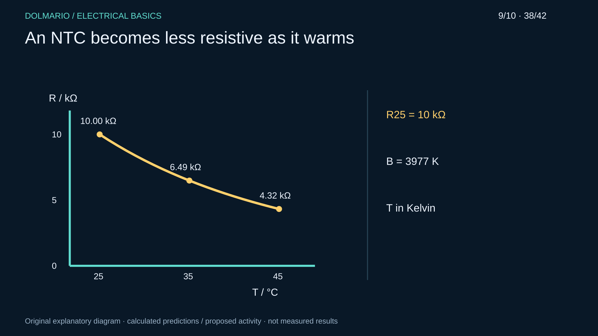

Original proposed teaching activities, not performed. Actual measurement fields remain empty.
Known 470 Ω, 1 kΩ and 4.7 kΩ resistors with documented tolerance; meter, colour chart, magnifier. No external supply.
Record colour code, nominal value and interval first. Measure each isolated unpowered part; document lead/contact indication.

| Part | Colour sequence | Nominal Ω | Interval Ω | Measured Ω | Explanation |
|---|---|---|---|---|---|
Prediction / Observation / Difference / Explanation:
____________________________________________________________
1 kΩ ±5%, ≥0.25 W; isolated supply, suitable instruments; ≤5 V, current limit 10 mA.
Supply → ammeter → R → supply; voltmeter parallel to R. Assemble with output OFF. Measure actual U across R and I at 1/2/3/4/5 V.

| U across R V | I mA | R=U/I Ω | Measurement conditions |
|---|---|---|---|
Prediction / Observation / Difference / Explanation:
____________________________________________________________
1 kΩ and 2.2 kΩ, each ≥0.25 W; 5 V, current limit 10 mA.
Predict, assemble the inspected series circuit, measure common current and individual voltages. Output OFF and socket check before each change.

| I mA | U1 V | U2 V | U1+U2 V | Usource V | Explanation |
|---|---|---|---|---|---|
Prediction / Observation / Difference / Explanation:
____________________________________________________________
R1=R2=RL=1 kΩ, each ≥0.25 W; 5 V, current limit 10 mA.
Start with R1/R2 divider; then connect RL parallel to R2. Switch OFF before changes. Compare both arrangements.

| Condition | Uout V | Isource mA | IRL mA | Explanation |
|---|---|---|---|---|
Prediction / Observation / Difference / Explanation:
____________________________________________________________
470 Ω, 1 kΩ, 2.2 kΩ, each ≥0.25 W; 5 V, current limit 20 mA.
Three parallel branches. Open the relevant branch only with output OFF; insert an ammeter in series for branch measurement.

| Branch | U V | I mA | G mS | P mW | Explanation |
|---|---|---|---|---|---|
Prediction / Observation / Difference / Explanation:
____________________________________________________________
100 Ω rated ≥2 W according to its actual datasheet; suitable holder, heat-resistant surface, suitable temperature sensor. ≤6 V, current limit 70 mA.
Do not heat in a plastic breadboard or touch the part. At each 3 V/6 V observe ≤60 s, record every 15 s. Stop for smoke/smell/unstable mounting/>50°C and allow cooling. 50°C is a teaching stop threshold, not a safe-touch guarantee.

| U V | Time s | I mA | P W | Temperature °C | Stop reason |
|---|---|---|---|---|---|
Prediction / Observation / Difference / Explanation:
____________________________________________________________
Two 1 MΩ and two 1 kΩ resistors; ≥0.25 W; meter input checked in its manual, calculated assumption 10 MΩ; 5 V.
A: measure 1-MΩ divider and calculate meter loading. B: external supply disconnected, measure two parallel 1-kΩ parts in ohms mode, then disconnect one branch.

| Part | Prediction | Real measurement | Meter input resistance | Explanation |
|---|---|---|---|---|
Prediction / Observation / Difference / Explanation:
____________________________________________________________
Approved NTCLE100E3103JB0 or suitable equivalent 10-kΩ part, meter, thermometer, closed warm-water container.
Indirectly warm to 25/35/45°C, keep contacts dry. No unapproved immersion, flame or hot-air activity. Await stabilization; no external supply, check meter-induced self-heating.

| Temperature °C | R kΩ | Stabilization | Difference | Explanation |
|---|---|---|---|---|
Prediction / Observation / Difference / Explanation:
____________________________________________________________